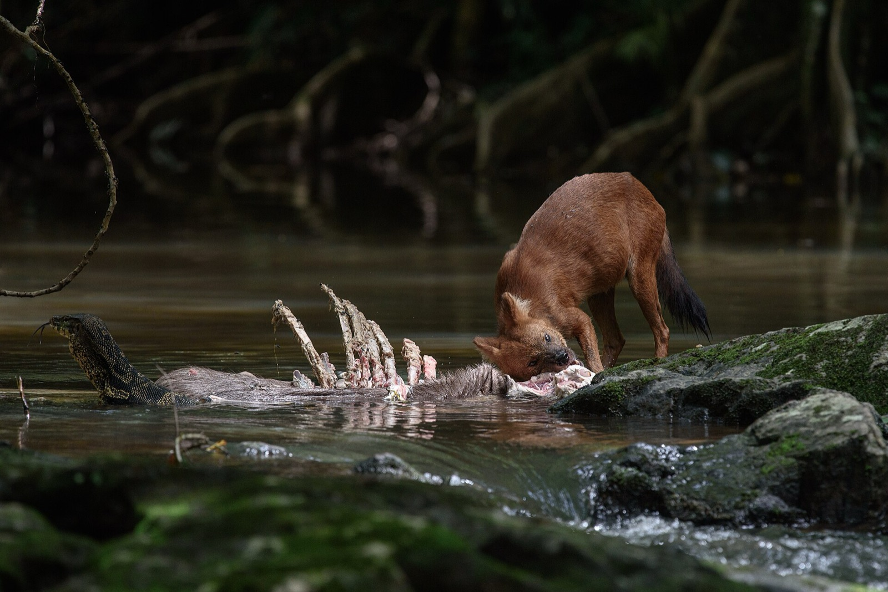

A forest holds far more deer than the dholes that hunt them.
Dholes are wild dogs that hunt in packs across the forests of Southeast Asia. They are fast and fierce, yet they are always rare next to the deer they eat. The reason is energy. This page follows energy up a food chain, one level at a time.

A food chain shows who eats whom. In Khao Yai, one chain runs from forest plants to deer to dholes. Energy moves up the chain each time one living thing eats another.
Each step in a food chain is a trophic level. Plants are producers: they capture energy from sunlight. Deer and dholes are consumers: they get their energy by eating other living things.
Measuring energy in a river
Counting the energy in a whole forest is hard. So in the 1950s, ecologist Howard Odum measured a smaller ecosystem: Silver Springs, a clear, spring-fed river in Florida. He measured the energy each trophic level captured over one year.
| Level | What lives there | Energy (kcal per m² per year) |
|---|---|---|
| Plants | Water plants and algae (producers) | 20,810 |
| Plant-eaters | Insects and snails | 3,368 |
| Fish | Small fish | 383 |
| Top fish | Large fish | 21 |
| Decomposers | Bacteria and fungi | 5,060 |
Source: Odum, 1957, Ecological Monographs 27: 55 to 112, as redrawn in OpenStax Biology 2e, Figure 46.10. A kilocalorie (kcal) is the unit printed on food labels as a Calorie.
To find the share of energy that passes up one step, divide the upper level by the lower one. Then multiply by 100.
The next two steps pass on 11% and 5.5%. You may hear of a "10% rule". It is an average of steps like these, not a law that every step obeys.
Draw each level as a bar, with its width set by its energy, and stack the bars. The result is an energy pyramid. In Silver Springs the top bar is only about one thousandth as wide as the bottom bar.
Follow 1,000 units of energy
The model below scales Silver Springs down to 1,000 units of energy in the producers. Each square is one unit. Press "Pass energy up" to move the energy one level, then watch where it goes.
How much of the energy in plants reaches the top of a food chain?
- Energy stored in living things
- Energy leaving as heat and waste
- Outlined square: energy that has already moved on
- Press Pass energy up once. Look for: a few green squares fly up, and most turn orange and fade. Note how many reached the plant-eaters.
- Press Pass energy up two more times. Look for: how small the top level is. When the last move ends, press Record.
- Press 10% every step, then pass the energy up three times. Look for: which levels differ from the Silver Springs run. Press Record at the end.
Use your evidence
Where the energy goes
Energy does not vanish. At every level, it goes one of three ways.
- Used to live: moving, growing, repairing and keeping warm all use energy. This energy leaves the body as heat.
- Left behind: waste, dead leaves and dead bodies still hold energy. Decomposers, such as bacteria and fungi, feed on them.
- Passed up: only the energy stored in a body that the next level eats moves up the chain.
Look back at Table 1. The decomposers captured 5,060 kcal. That is more than all three consumer levels combined, which add up to 3,772 kcal. The water monitor in Figure 1 is doing the same job: feeding on what the dhole leaves behind.
Many students think energy cycles through an ecosystem like carbon does. Matter cycles: decomposers return carbon and nitrogen to the soil and air. Energy flows one way and leaves as heat, so the sun must keep supplying it.
Every step up a food chain loses most of its energy. So each level holds less energy than the one below, and top predators are always rare.
Two kinds of pyramid
Ecologists can also weigh the living things at each level. The total dry mass of living things in a place is its biomass. Table 2 compares Silver Springs with the open sea of the English Channel, off Plymouth.
| Level | Silver Springs, Florida | English Channel |
|---|---|---|
| Producers (plants or algae) | 809 | 4 |
| Plant-eaters | 37 | 21 |
| Fish | 11 | not measured |
| Top fish | 1.5 | not measured |
Sources: Odum, 1957 (Silver Springs). Harvey, 1950, Journal of the Marine Biological Association of the United Kingdom (English Channel off Plymouth), as redrawn in OpenStax Biology 2e, Figure 46.10. In the Channel, the producers are tiny floating algae and the plant-eaters are tiny floating animals.
Silver Springs gives an upright biomass pyramid, like its energy pyramid. The English Channel gives a pyramid that is upside down: the plant-eaters outweigh the algae they eat.
Biomass is a snapshot of what is alive at one moment. Energy is a total over a whole year. A biomass pyramid can be upside down, but an energy pyramid never can: no level can capture more energy than the level it eats.
Explain with numbers
Use numbers from Table 1 or from your recorded rows. A strong answer shows one calculation and says where the lost energy went.
Prompt: Dholes are top predators in the forests of Khao Yai. Use energy data to explain why dholes are much rarer than the deer they eat. Then explain why food chains rarely have more than four or five levels.
- Calculation (1 mark): You calculate the share passed up for at least one step, such as 3,368 ÷ 20,810 = 16%.
- Where energy goes (1 mark): You say that most energy is used to live and leaves as heat, or is left for decomposers.
- Dholes are rare (1 mark): You explain that the deer level holds only a small share of the plants' energy.
- The dhole level gets a small share of that again, so it can feed only a few dholes.
- Short chains (1 mark): You explain that after four or five steps too little energy is left to feed another population.
If your species is a predator, it needs a large area of habitat full of prey. Does your Version 1.0 protect enough of the levels below your species? Write one change in your project journal.